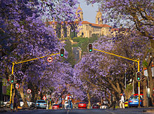

Regionald Mongwe

Pretoria
| English | Tswana translation | zulu Translation |
|---|---|---|
| greetings !!! | Dumelang | Sanibonani |
| thanks | ke a leboga | ngiyabonnga |
| please help | ke kopa thuso | Ngicela ungisize |
| where is the police station? | seteishene sa maphodisa se fa kae? | sikuphi isiteshi samaphoyisa? |
church square

Church Square, originally Market Square, is the square at the historic centre of the city of Pretoria, Gauteng, South Africa. The founder of Pretoria, Marthinus Pretorius, determined that the square be used as a market place and church yard.
union buildings

The Union Buildings (Afrikaans: Uniegebou) form the official seat of the South African Government and also house the offices of the President of South Africa. The imposing buildings are located in Pretoria, atop Meintjieskop at the northern end of Arcadia, close to historic Church Square and the Voortrekker Monument.
The Voortrekker Monument

The Voortrekker Monument is located just south of Pretoria in South Africa. This massive granite structure is prominently located on a hilltop, and was raised to commemorate the Voortrekkers who left the Cape Colony between 1835 and 1854.